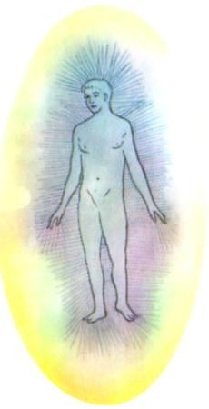

energy vampire / emotional contagion
人の感情をもらってしまう
人混みで疲れる。誰かと話したあと、理由もなく沈む。どこまでが自分の感情で、どこからが相手のものか分からない。この分野で名前の知られた人が教えている「たったひとつの決まり」と、「エネルギーヴァンパイア」という言葉の来歴、心理学が同じ現象につけている名前。

人の多いところに行くと、ぐったりする。誰かと話したあと、理由もなく気分が沈んでいる。相手が怒っていると、自分まで胸が苦しくなる。そして、いちばん困るのは、どこまでが自分の感情で、どこからが相手のものなのか、分からないことです。
この悩みは、この分野では「エンパス」「HSP」という言葉とともに語られることが多く、疲れさせる相手のほうには「エネルギーヴァンパイア」という名前がついています。このページでは、この分野で名前の知られた人がこの悩みにどう答えているかを見て、そのあとで、この言葉がどこから来たのかと、心理学が同じ現象につけている名前を、隣に置きます。
「自分のエネルギーと、人のエネルギーを、どう見分ければいいのですか」
この分野の教師、クリスティーナ・ロペス（理学療法の博士号と公衆衛生の修士号を持つ元臨床家）のもとに、まさにこの質問が届いています。「自分のエネルギーと他人のエネルギーの違いを、もっとうまく見分けられるようになるには、どうすればいいですか。少しずつ上達している気はするのですが、まだ正しく読み取るのがとてもむずかしいです」。
ロペスの答えは、意外なほど短いものです。
「この質問はよく受けます。そして、私の答えを聞くと、ときどき気を悪くする人がいるのですが。エンパスや敏感な人にいつも教えている、簡単な決まりがひとつあります。それは——
感じているなら、それはあなたのもの。
これが人気のない答えなのは分かっています。この質問をする人は、たいてい嫌な感情のことを言っているからです。誰かの幸せや喜びを感じて困る人はいません。怒りや悲しみや落ち込みのような重いものを外から受け取ると、不快だから、すぐに追い出したくなる。それでこの質問になるのです」
つまりロペスは、「見分け方」を教えるのではなく、見分けなくてよいと言っています。「どこから来たエネルギーであれ、それがあなたのなかに入ってきて、あなたが自分の内側で感じている瞬間に、それはもうあなたのものです。もとはジョーからでも、メアリーからでも、自分からでも、関係ありません」。
では、何をすればよいと言われているのか
「自分のもの」と認めたあとに何をするかを、ロペスは悲しみを例にして、順に説明しています。
「悲しみを感じている。さっきジョンと話していて、彼がその日少し悲しそうだったから、それをもらったのかもしれない。でも、決まりを思い出す。感じているなら、私のもの。だから、このエネルギーに責任を持つ」
2．押し返さない
「押しのけない。放り出そうとしない。抵抗の状態に入らない。『ああ、悲しみ』と言って、一緒に座る」
3．胸に持っていく
「それから、注意を胸の中心に向けます。胸の中心は、すべてを変換する炉のようなものです。私はよく手を胸に当てて、その悲しみを、抵抗も戦いもなしに、『こんにちは、悲しみ』と言って胸に運び込むところを思い描きます。すると、それは静けさや喜びや平和のような、もっと澄んだエネルギーに変わっていきます」
そして、なぜ「押し返す」のではなく「引き受ける」のかについて、ロペスはエンパスという存在そのものの説明をしています。
「この決まりがあれば、まず、もう混乱しなくなります。そして、自分がなぜそれを感じるのか、なぜエンパスなのかが分かってくる。エネルギーを受け取って、もっと澄んだものに変えて戻すため。それが、敏感であることを力にする道です」
この答えは、「守る」「遮断する」「境界線を引く」という、この分野でよく語られる方向とは、逆を向いています。ロペスは別の動画で、「エンパスは境界線を引かなくてよい。自分のエネルギーが強く外へ向かっていれば、境界はいらない」とも語っています。どちらが合うかは、人によって違うはずです。ただ、「見分けようとして疲れている」人にとって、「見分けなくてよい」という答えがひとつあることは、知っておいてよいことです。
「エネルギーヴァンパイア」という言葉は、どこから来たのか
疲れさせる側につけられた名前には、はっきりした来歴があります。そして、その来歴は、いまこの言葉を使っている人が思うより、ずっと暗いところから始まっています。
・1930年 — イギリスの魔術師ダイオン・フォーチュンが『Psychic Self-Defense（心霊的自己防衛）』で、「心霊的な寄生」を吸血鬼にたとえて書く。フォーチュンは、本物の心霊的吸血と、似た症状を出す精神の状態（二人組精神病など）を区別している
・1960年代 — アントン・ラヴェイと彼の「サタン教会」が「サイキック・ヴァンパイア」という言葉を広める。ラヴェイは『サタンの聖書』で、これを「他人から生命力を吸い取る、霊的・感情的に弱い人」の意味で使い、自分が作った言葉だと主張した
・1970年代 — イギリスのミュージシャン、ピーター・ハミルが「エナジー・ヴァンパイア」という言葉を、押しつけがましい熱狂的なファンを指す言葉として使いはじめる。1978年のアルバムに同名の曲がある
・1990年代以降 — ソ連崩壊後のロシアで、二つの言葉が同じ意味で使われるようになる。アメリカの著述家アルバート・バーンスタインは「エモーショナル・ヴァンパイア」を、人の感情のエネルギーを消耗させるとされる、いくつかの人格の型を指す言葉として使う
・2019年 — アメリカのコメディドラマ『What We Do in the Shadows』に、退屈な話で人を疲れさせる「エナジー・ヴァンパイア」コリン・ロビンソンが登場する
ウィキペディアの項目は、この言葉について「その人のそばにいると疲れ、集中できず、沈む——そういう影響を持つ人を指す比喩としても使われる」と書き、一方で「吸い取られるとされる身体的・心霊的なエネルギーが存在するという科学的・医学的な証拠はない」としています。
この分野でこの言葉をいちばん広めたのは、アメリカの精神科医ジュディス・オーロフです。1951年生まれ、UCLAの精神科の准臨床教授で、自分を「直観的な精神科医」と呼び、透視の力があると公言しています。『Emotional Freedom（感情の自由）』（2009年）はニューヨーク・タイムズのベストセラーになり、15か国語に訳されました。『The Empath's Survival Guide（エンパスのサバイバルガイド）』も書いています。なお、彼女の最初の本『Second Sight』は、2001年にアメリカ上院の委員会で「無責任で非科学的な仕事」の例として名前を挙げられています。この分野で名前の通った人が、同時にそういう批判も受けている、ということは、知っておいてよいことです。
心理学の側では
「相手の感情が、こちらに移ってくる」という経験そのものには、心理学の側に、はっきりした名前と研究があります。
1993年の論文で、心理学者のエレイン・ハットフィールド、ジョン・カシオッポ、リチャード・ラプソンは、これを「他者の表情、声、姿勢、動きを自動的に模倣し同期させる傾向、そしてその結果として感情が近づいていく傾向」と定義しました。
仕組みは二段階だとされます。まず、人は相手をまねる（相手が笑うと、こちらも笑い返す）。次に、自分の表情や姿勢が変わったことで、自分の感情そのものが変わる。笑顔は幸せな気分にさせ、しかめっ面は気分を悪くさせる。
この傾向は、生まれる前から始まっています。妊娠25週以降、母親が話したり歌ったりすると、胎児は口を開けます。あくびがうつるのは、妊娠7か月から。人間だけでなく、ほかの霊長類、犬、鶏でも確かめられています。
ハットフィールドらの研究には、もうひとつ、ロペスの答えと重なるところがあります。1993年の研究によれば、人が相手の感情を意識して判断するときは相手の言葉に影響されるのに、人自身の感情は、相手が本当に感じていることの、言葉以外の手がかりに影響されていた、と。つまり、感情は言葉を通らずに移る。そして、ウィキペディアの項目はこう続けます。「感情を認識し、その起源を認めることは、感情の伝染を避ける一つの方法となりうる」。
ロペスの「感じているなら、それはあなたのもの。ああ、悲しみ、と言って一緒に座る」は、この「感情を認識し、その起源を認める」を、別の言葉で言ったもののように読めます。片方は「変換」と呼び、片方は「認識」と呼んでいますが、最初にすることは同じです。押し返さずに、名前をつける。
感情の伝染は、画面を通しても起きます。2014年、フェイスブックとコーネル大学は、68万9千人のユーザーのニュースフィードから、肯定的または否定的な感情を含む投稿を減らす実験を行い、ユーザー自身の投稿の感情がそれに応じて変わることを示しました。この実験は、本人の同意なしに行われたことで大きな反発を受けています。
「人の感情をもらってしまう」のは、対面だけではない、ということでもあります。
近いことを言っているもの
- エンパス — 「人の感情を自分のことのように感じる人」を指す、この分野の言葉。別のページで扱っています
- HSP — 心理学者エレイン・アーロンが1996年に名づけた「とても敏感な人」。ロペスはエンパスとHSPを並べて使っています
- 感情の伝染 — 上に書いた、心理学の側の名前です
- 境界線（バウンダリー） — 「自分と相手のあいだに線を引く」という、この分野でよく語られる方法。ロペスの答えは、これとは逆の方向を向いています。どちらも、選べます
出典・参考
- Christina Lopes, How To Know What's My Energy Vs Theirs?（YouTube, #askchristina）「感じているなら、それはあなたのもの」という決まりと、そのあとにすること。引用は自動生成の字幕による
- Psychic vampire（英語版ウィキペディア）「エネルギーヴァンパイア」という言葉の来歴（1930年、1960年代、1978年）
- Judith Orloff（英語版ウィキペディア）エンパスについて書いている精神科医の来歴と著書
- 感情の伝染（日本語版ウィキペディア）ハットフィールドら（1993）の定義、二段階の仕組み、2014年の実験
関連することば
 ascendant / rising signアセンダント（上昇宮）自分の星座の説明が、どうも自分に合わない。初対面の人から見た自分と、自分で思う自分が違う。占星術がそこに与えている名前が、アセンダント。太陽・月とあわせて「ビッグスリー」と呼ばれる3つ目。出生時刻が要る理由も。
ascendant / rising signアセンダント（上昇宮）自分の星座の説明が、どうも自分に合わない。初対面の人から見た自分と、自分で思う自分が違う。占星術がそこに与えている名前が、アセンダント。太陽・月とあわせて「ビッグスリー」と呼ばれる3つ目。出生時刻が要る理由も。 inner childインナーチャイルド恋愛になると、急に子どもに戻ってしまう。人が離れていくのが怖い。安心できたことがない。自分のなかの「子ども」が傷ついているのか、どう確かめ、どう向き合えばよいと言われているか。
inner childインナーチャイルド恋愛になると、急に子どもに戻ってしまう。人が離れていくのが怖い。安心できたことがない。自分のなかの「子ども」が傷ついているのか、どう確かめ、どう向き合えばよいと言われているか。 angel numbersエンジェルナンバー時計を見ると11:11。車のナンバーが444。同じ数字ばかり目に入る。これは何かの合図なのか。何をすればいいのか。そして、この考え方を作った本人が、後年それを離れたという事実について。
angel numbersエンジェルナンバー時計を見ると11:11。車のナンバーが444。同じ数字ばかり目に入る。これは何かの合図なのか。何をすればいいのか。そして、この考え方を作った本人が、後年それを離れたという事実について。 empathエンパス人混みで消耗する。相手の不機嫌が自分に移る。断れない。ひとりでいたい。自分は弱いのだろうか。それぞれの悩みに、この分野で名前の知られた人たちが何と言っているか。
empathエンパス人混みで消耗する。相手の不機嫌が自分に移る。断れない。ひとりでいたい。自分は弱いのだろうか。それぞれの悩みに、この分野で名前の知られた人たちが何と言っているか。
auraオーラ「あなたのオーラは青です」と言われた。自分には見えない。「オーラが弱い」と言われて不安になった。オーラとは何だと言われていて、どこから来た言葉で、写真に写るのか、見える人はいるのか。この分野で名前の知られた人が「感情体」について語っていることと、日本に大正時代に入ってきた経緯も。 spiritual awakening覚醒自分がおかしくなったのではないか。まわりの人が分からなくなった。体がつらい。昔のことばかり思い出す。家族に理解されない。それぞれの悩みに、この分野で名前の知られた人たちが何と言っているか。
spiritual awakening覚醒自分がおかしくなったのではないか。まわりの人が分からなくなった。体がつらい。昔のことばかり思い出す。家族に理解されない。それぞれの悩みに、この分野で名前の知られた人たちが何と言っているか。